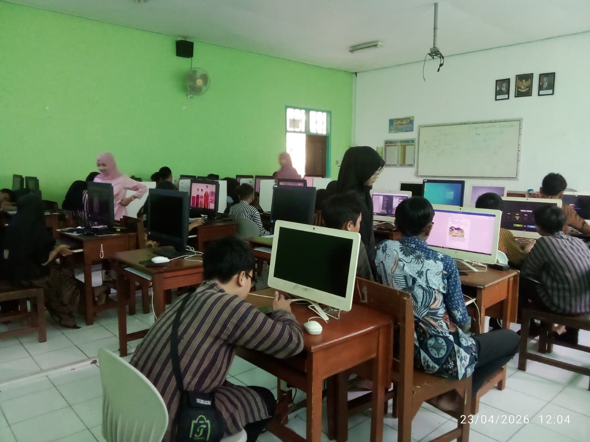
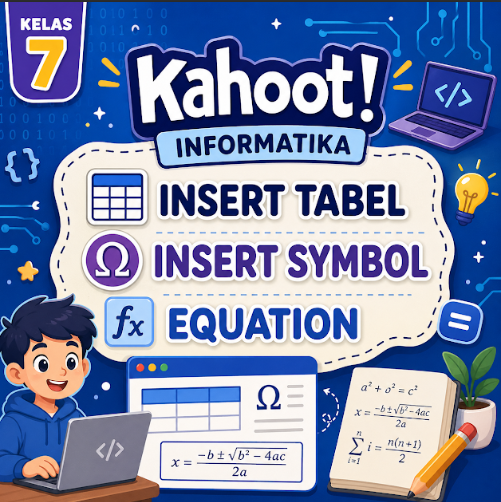
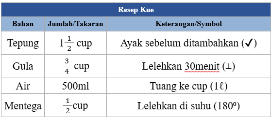
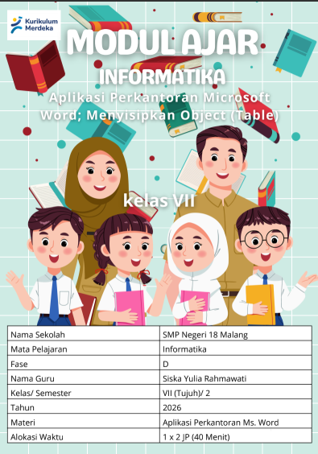

Konteks
RPP mengacu pada Kurikulum Merdeka dengan pendekatan berkesadaran (mindful) dan bermakna, yang menekankan pengalaman belajar langsung serta keterkaitan dengan kehidupan sehari-hari, seperti penyusunan jadwal atau data
📚 SEMESTER 1 • PPL TERBIMBING
Dokumentasi pelaksanaan PPL Terbimbing Siklus 2 yang memuat perangkat pembelajaran, aktivitas pembelajaran, hasil kerja peserta didik, media pembelajaran, dan dokumentasi penilaian.
TENTANG SIKLUS 2
Halaman ini menyajikan dokumentasi dan analisis artefak pembelajaran yang digunakan dalam pelaksanaan PPL Terbimbing Siklus 2.
Siklus kedua berfokus pada keterampilan menyisipkan dan mengelola tabel dalam dokumen Microsoft Word. Pembelajaran dilakukan melalui praktik langsung dan diskusi kelompok dengan pendekatan bermakna (meaningful learning), sehingga peserta didik dapat memahami cara menyusun data secara terstruktur dan rapi sesuai kebutuhan nyata.
RPP mengacu pada Kurikulum Merdeka dengan pendekatan berkesadaran (mindful) dan bermakna, yang menekankan pengalaman belajar langsung serta keterkaitan dengan kehidupan sehari-hari, seperti penyusunan jadwal atau data
Peserta didik mampu menyisipkan tabel (Insert Table), mengatur baris dan kolom, serta menyajikan data dalam bentuk tabel yang rapi, terstruktur, dan mudah dibaca.
Pembelajaran praktik langsung membuat peserta didik lebih mudah memahami konsep penyajian data. Diskusi kelompok juga mendorong kerja sama, serta membantu peserta didik saling belajar dalam menyelesaikan tugas pembuatan tabel.
Sebagian peserta didik masih mengalami kesulitan dalam mengatur ukuran tabel dan kerapian tampilan, sehingga membutuhkan arahan dan bimbingan lebih lanjut dari guru selama proses praktik.
ANALISIS ARTEFAK
Analisis singkat terhadap artefak yang digunakan dalam PPL Terbimbing Siklus 1.
Kendala yang saya alami selama proses penyusunan produk pembelajaran pada siklus 2 terutama berkaitan dengan keterbatasan dalam mengalokasikan waktu secara optimal dan penyesuaian perangkat dengan kondisi peserta didik. Meskipun perencanaan sudah lebih terstruktur, saya masih menghadapi tantangan dalam memastikan seluruh tahapan pembelajaran—terutama bagian penutup seperti refleksi—dapat dirancang secara proporsional. Selain itu, saya juga perlu lebih cermat dalam menyesuaikan kegiatan praktik dan materi dengan kemampuan peserta didik yang beragam agar tetap sesuai dengan waktu yang tersedia dan dapat terlaksana secara maksimal

Pada siklus 2, teori atau konsep pedagogi yang saya adopsi adalah pendekatan Mindful dan Meaningful Learning yang menekankan pembelajaran berkesadaran dan bermakna, dipadukan dengan praktik langsung (learning by doing) serta diskusi kelompok. Pendekatan ini bertujuan agar peserta didik tidak hanya memahami konsep secara teknis, tetapi juga mampu mengaitkan materi dengan kebutuhan nyata serta belajar secara kolaboratif melalui kegiatan praktik pembuatan tabel

Perubahan beberapa komponen pembelajaran pada siklus 2 dapat saya lakukan dengan menyesuaikan kondisi kelas, seperti pada LKPD resep makanan yang dapat diubah konteksnya menjadi tugas lain yang lebih dekat dengan kebutuhan siswa, misalnya jadwal pelajaran atau daftar piket. Selain itu, bentuk kerja kelompok berpasangan dapat diubah menjadi individu atau kelompok lebih besar sesuai tingkat kemandirian siswa . Pendekatan Mindful dan Meaningful Learning juga dapat dibuat lebih terbimbing atau lebih eksploratif tergantung kemampuan kelas. Dari segi media dan sarana, penggunaan komputer/laptop dapat disesuaikan dengan fasilitas yang tersedia, sedangkan asesmen, pengayaan, dan remedial dapat dimodifikasi baik dari tingkat kesulitan maupun bentuk pendampingannya agar sesuai dengan karakteristik dan kebutuhan peserta didik di kelas tersebut

Perubahan komponen pembelajaran dapat dilakukan secara fleksibel sesuai kondisi kelas, seperti penyesuaian tingkat kesulitan LKPD dan modul praktik berdasarkan kemampuan peserta didik, modifikasi model dan metode pembelajaran dari eksploratif menjadi lebih terbimbing, pengaturan ulang bentuk kerja (individu atau kelompok), serta penyesuaian media dan sarana seperti penggunaan smartphone jika komputer terbatas. Selain itu, sistem asesmen, remedial, dan pengayaan juga dapat diubah agar lebih sesuai dengan kebutuhan dan karakteristik peserta didik, sehingga pembelajaran tetap efektif di berbagai situasi kelas.

📂 DOKUMENTASI
Pilih dokumen yang ingin dilihat. Setiap tombol nantinya dapat diarahkan ke dokumen Google Drive masing-masing.
Rencana Pelaksanaan Pembelajaran yang digunakan sebagai pedoman dalam merancang dan melaksanakan pembelajaran pada Siklus 2.
Buka RPP →Lembar Kerja Peserta Didik yang digunakan untuk mendukung aktivitas dan keterlibatan peserta didik dalam proses pembelajaran.
Buka LKPD →Dokumentasi contoh hasil kerja peserta didik sebagai gambaran hasil kegiatan pembelajaran pada Siklus 2.
Lihat Hasil Kerja →Media pembelajaran yang digunakan untuk membantu penyampaian materi serta mendukung proses pembelajaran pada Siklus 2.
Lihat Media →Lampiran yang mendokumentasikan hasil penilaian dan evaluasi pembelajaran pada Siklus 2.
Lihat Lampiran Nilai →REFLEKSI
Bagian ini dapat digunakan untuk menuliskan refleksi setelah pelaksanaan pembelajaran pada Siklus 2.
Pelaksanaan PPL Terbimbing Siklus 2 menjadi bagian dari proses pengembangan kemampuan dalam merancang dan melaksanakan pembelajaran. Pengalaman pada siklus ini dapat menjadi bahan refleksi untuk melihat ketercapaian pembelajaran, respons peserta didik, serta aspek yang masih perlu diperbaiki.
Catatan: Bagian refleksi ini dapat diganti dengan refleksi pribadi berdasarkan pengalaman dan hasil observasi Siklus 2.
Scroll dokumen berikut untuk melihat ringkasan hasil dan catatan akhir.
PPL TERBIMBING